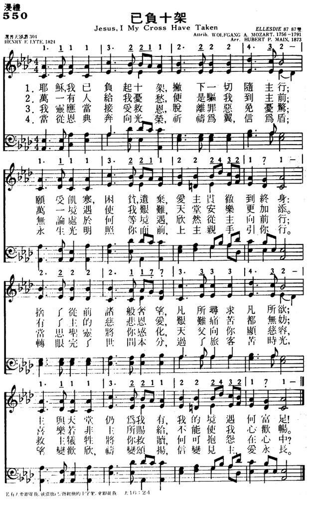

|
|
|
|
1 Jesus, I my cross have taken, 2 Let the world despise and leave me; 3 Go, then, earthly fame and treasure! 4 Haste, my soul, from grace to glory, |
550已负十架
1.耶稣，我已负起十架，撇下一切随主行；
愿受饥寒,困贫,遗弃，爱主贯彻到终身； 舍了从前诸般奢望，凡所寻求凡所欲； 主与天堂仍为我有，我的境遇何富足！ 2.万一有人给我忧愁，便是驱我到主前； 万一境遇使我艰难，天堂安乐更加添。 有了主的慈悲恩爱，艰难痛苦都无妨； 喜乐若非主所赐给，不能使我心欢畅。 3.我灵应当接受救恩，脱离罪恶免忧惊； 无论处于何等境遇，欣然从主向前行； 当思圣灵将你感化，天父向你显慈容， 救主牺牲将你救赎，何可抱怨在心中？ 4.当从恩典奔向光荣，祈祷为翼，信为盾； 永生光明照你面前，上主亲手引你行。 转眼完了世间本分，过了旅客苦时光， 望变欢欣，祷变颂扬，信变见主，爱永长。 |
|
https://www.mred365.cn/szxg/7553.html
 https://hymnary.org/hymn/HFLC1974/page/387
|
|
|
|
|

-

經典音樂河-聖誕佳音~已負十架 https://youtu.be/_d1UH7nBgh4 -
已负十架 Jesus, I My Cross Have Taken https://youtu.be/zLaRvH-uU8c -
https://youtu.be/qn-_bGNALU8
| Text: | Jesus, I My Cross Have Taken |
| Author: | Henry F. Lyte |
| Tune: | ELLESDIE |
| Arranger: | Hubert P. Main |
| Composer (attributed to): | Wolfgang A. Mozart, 1756-1791 |
| Short Name: | Henry Francis Lyte |
| Full Name: | Lyte, Henry Francis, 1793-1847 |
| Birth Year: | 1793 |
| Death Year: | 1847 |
Lyte, Henry Francis,

M.A., son of Captain Thomas Lyte, was born at Ednam, near Kelso, June 1, 1793, and educated at Portora (the Royal School of Enniskillen), and at Trinity College, Dublin, of which he was a Scholar, and where he graduated in 1814. During his University course he distinguished himself by gaining the English prize poem on three occasions. At one time he had intended studying Medicine; but this he abandoned for Theology, and took Holy Orders in 1815, his first curacy being in the neighbourhood of Wexford. In 1817, he removed to Marazion, in Cornwall. There, in 1818, he underwent a great spiritual change, which shaped and influenced the whole of his after life, the immediate cause being the illness and death of a brother clergyman. Lyte says of him:—
"He died happy under the belief that though he had deeply erred, there was One whose death and sufferings would atone for his delinquencies, and be accepted for all that he had incurred;"
and concerning himself he adds:—
"I was greatly affected by the whole matter, and brought to look at life and its issue with a different eye than before; and I began to study my Bible, and preach in another manner than I had previously done."
From Marazion he removed, in 1819, to Lymington, where he composed his Tales on the Lord's Prayer in verse (pub. in 1826); and in 1823 he was appointed Perpetual Curate of Lower Brixham, Devon. That appointment he held until his death, on Nov. 20, 1847. His Poems of Henry Vaughan, with a Memoir, were published in 1846.
His own Poetical works
were:—
(1) Poems chiefly Religious 1833; 2nd ed.
enlarged, 1845. (2) The Spirit of the Psalms, 1834,
written in the first instance for use in his own Church at Lower Brixham,
and enlarged in 1836; (3) Miscellaneous Poems (posthumously)
in 1868. This last is a reprint of the 1845 ed. of his Poems,
with "Abide with me" added. (4) Remains, 1850.
Lyte's Poems have been somewhat freely
drawn upon by hymnal compilers; but by far the larger portion of his hymns
found in modern collections are from his Spirit of the
Psalms. In America his hymns are very popular. In many instances,
however, through mistaking Miss Auber's (q. v.) Spirit of
the Psalms, 1829, for his, he is credited with more than is his due.
The Andover Sabbath Hymn Book, 1858, is specially at
fault in this respect. The best known and most widely used of his
compositions are "Abide with me, fast falls the eventide;” “Far from my
heavenly home;" "God of mercy, God of grace;" "Pleasant are Thy courts
above;" "Praise, my soul, the King of heaven;" and "There is a safe and
secret place." These and several others are annotated under their respective
first lines: the rest in common use are:—
i. From his Poems chiefly Religious, 1833 and 1845.
Tune Information
| Title: | ELLESDIE |
| Composer (attributed to): | Wolfgang Amadeus Mozart |
| Meter: | 8.7.8.7 D |
| Incipit: | 11113 22112 22243 |
| Key: | F Major |
| Source: | Joshua Leavitt's Christian Lyre, 1831 |
| Copyright: | Public Domain |

简介（一） （来源：《赞美诗新编史话》）
已负十架歌 Jesus, I my cross have taken 《赞美诗新编史话》
经文：“若有人要跟从我，就当舍己，背起他的十字架，来跟从我” (可8：34)。
《已负十架歌》词作者是莱特牧师(事略参阅 153首)。莱特是一位敬虔博学的牧师，多年在一穷苦的渔村工作。由于生活的坎坷以及他与渔民文化程度的悬殊，经常有些不愉快与磨擦，莱特却认为这是他应当背负的十字架，从主得到安慰，经常写诗自娱。1961年伦敦出版的《救世军军歌》中介绍说：“这首诗是莱特为纪念他的妻子而写。因她不顾家庭的反对，毅然决然与莱特牧师同到渔村，艰苦而愉快地为教会工作。”莱特牧师弥留之际，指着上天说：“平安、快乐 !”正是他“望变欢欣，祷变颂扬，信变见主，爱永长”实现之日。
这首诗所根据的经文是马可福音第 1O章第28节：“彼得说：‘看哪 !我们已经撇下所有的跟从你了。’”原诗共有六节中文采用了四节。中文词由杨荫浏于 1934年修改《颂主诗歌》本而成。
这首诗被认为是 l9世纪最流行的灵修圣诗，不但是因为它词意深刻，也因为它所配用感人的 曲调是梅因改编莫扎特的名曲选段。
莫扎特(W.A.Mozart，1756一1791)乃奥国著名作曲家，素有神童之称。他的曲调流畅纯洁，光采焕发，给人以向上快乐的感觉。他从他父亲那里承继过来的音乐兴趣和宗教、敬虔，使他在生活穷困潦倒、贫病交加之中仍不改其乐。他曾说：“纵使我的舌头已经尝到死的滋味，而我的创作仍是乐观的。”他在三十五年的短暂生命中共创作了各种音乐名曲六百多卷，曾应教会之请谱写了一部《安魂弥撒曲 (REQUIEM)》。在他出生的奥地利第二大城萨尔茨堡以有许多莫扎特的遗迹而驰名于世。 1991年12月5 日是他逝世200周年，成为本世纪音乐界的大事。欧美各国都举行盛大的纪念会。我国报纸上也转载翻译《莫扎特的故事》。据说在纽约的林肯艺术中心从1991年 1月27 日至12月5 日演奏莫扎特的全部作品总共有五百多场，许多印刷厂争先恐后出版他的作品。而莫扎特死时，却是十分孤单可怜，无人送葬，至今还不知道他埋葬的地方。维也纳墓园所立的莫扎特纪念碑是立在空墓之上。
另一说：莫扎特的学生们曾遍查莫扎特的作品，却没有找到这首《已负十架歌》的曲调。有的诗本说它是奈特(J.Knight，1812-1887)作于 1827年，又经梅因改编。下列有段故事：
有一位英国少女因信主耶稣，被不信主的父亲责骂，为了减少她对耶稣的爱，这位父亲就给她一首奈特谱写的歌曲叫她唱，歌名是《忘掉我吧》，曲谱就是这首ELLES.DE 。但出乎她父亲的意料，这位少女却将另外的词填到此谱上了，成为“耶稣，我已负起十架”
奈特也写过许多一般歌曲。中国过去常有人唱的《小船，像摇篮般地摇。 (Rocked in the Cradle of the deep)》就是奈特的作品。他是英国教会中的一位工作人员，1839年曾到美国纽约举行过9次演奏会。
乐谱改编者梅因 (H.P.Main，1839一1925)，其父为乐谱出版商。他自幼喜爱音乐，16岁即作曲，一生都在其父的乐谱出版公司工作。他精通和声学，写过许多福音歌曲、圣歌及一般歌曲，编辑过赞美诗。
https://www.xueshengshi.com/?p=9296
"JESUS, I MY CROSS HAVE TAKEN"
"…Lo,
we have left all and followed Thee" (Mk. 10.28)
INTRO.:
A hymn which expresses the attitude indicated by the apostle Peter to Christ in the text cited above is "Jesus, I My Cross Have Taken." The text was written by Henry Francis Lyte (1793-1847). It first appeared in his 1824 Sacred Poetry and was signed only "G." A slightly altered version appeared in Lyte’s 1833 Poems, Chiefly Religious, in which Lyte claimed authorship. Lyte is best-known for his hymn, "Abide With Me."
The tune (Ellesdie; also Disciple, Ocean, The Cross, Violet, or Vondeventer) first appeared in The Christian Lyre Vol. 11, published in 1831 by Joshua Leavitt (19th c.). It is often attributed to Wolfgang Amadeus Mozart (1756-1791). However, no such melody has ever been found among his known works. It is possible that the arrangement in Leavitt’s book was made by Lowell Mason (1792-1872). The modern harmonization was done by Hubert Platt Main (1839-1925). It first appeared in the 1873 Winnowed Hymns of C. C. McCabe and D. T. MacFarlan.
Among hymnbooks published by members of the Lord’s church during the twentieth century for use in churches of Christ, he hymn appeared in the 1923 Choice Gospel Hymns edited by T. B. Mosely; the 1921 Great Songs of the Church (No. 1) and the 1937 Great Songs of the Church No. 2 (each having three stanzas used with the "Ellesdie" tune and two others beginning "Know Thy Soul, Thy Full Salvation" with another tune) both edited by E. L. Jorgenson; and the 1963 Abiding Hymns edited by R. C. Welch. Today, it can be found in the 1986 Great Songs Revised edited by F. M. McCann; and the 1992 Praise for the Lord edited by John P. Wiegand.
The song identifies some things that are necessary to follow Jesus.
I. Stanza 1 talks about taking up the cross
"Jesus, I my cross have taken, All to leave and follow Thee;
Destitute, despised, forsaken, Thou from hence my all shall be.
Perish every fond ambition, All I’ve sought and hoped and known;
Yet how rich is my condition, God and heaven are still my own."
A. To follow Jesus requires that we take up the cross, i.e., be willing to bear
any burden that it takes to be His disciple: Mt. 16.24
B. However, this means that sometimes we will have to be "destitute, despised,
forsaken," because all who desire to live godly in Christ Jesus will suffer
persecution: 2 Tim. 3.12; because according to modern English grammar rules this
would be considered a dangling participle, most of our books have changed it to
"I am poor, despised, forsaken."
C. Yet, in spite of this, we can still have riches in Christ because God and
heaven are still available to us: Rom. 11.33
II. Stanza 2 talks about renouncing the world
"Let the world despise and leave me, They have (It has) left my Savior too;
Human hearts and looks deceive me, Thou art not, like man, untrue.
And, while Thou shalt smile upon me, God of wisdom, love, and might,
Foes may hate, and friends may shun me; Show Thy face, and all is bright."
A. The world here is that realm which has rejected the Savior and thus hates
His followers: Jn. 15.18-21
B. However, in contrast to human hearts and looks that deceive, God is not
untrue but faithful to His people: 1 Cor. 10.13
C. Therefore, as we turn from this world, we can trust the God of wisdom, love,
and might, to show His face to us, in the sense of shining His approval on us: 1
Pet. 3.12
III. Stanza 3 talks about staying our hearts on God
"Go, then, earthly fame and treasure! Come, disaster, scorn, and pain!
In Thy service, pain is pleasure; With Thy favor, loss is gain.
I have called Thee ‘Abba, Father;’ I have stayed my heart on Thee;
Storms may howl, and clouds may gather, All must work for good to me."
A. As disciples of Christ, we can expect that earthly fame and treasure will
leave us, and disaster, scorn, and pain will come, as it did to the apostles: 2
Cor. 11.22-28
B. However, in Christ we can count earthly loss as gain: Phil. 3.7-10
C. And because we can call God "Abba, Father," we can know that all things will
work out for our good: Rom. 8.15, 28
IV. Stanza 4 talks about fleeing to the Lord for safety
"Man may trouble and distress me, ‘Twill but drive me to Thy breast;
Life with trials hard may press me, Heaven will bring me sweeter rest.
O ’tis not in grief to harm me; While Thy love is left to me;
O ’twere not in joy to charm me Were that joy unmixed with Thee."
A. If we have the right attitude toward our troubles, they will simply bring us
closer to the Lord: Jas. 1.2-4, 4.8
B. Part of that attitude is remembering that the harder life’s trials here, the
sweeter the rest when life is over: Rev. 14.13
C. And with this attitude, neither the griefs of life can harm us nor the joys
of this world charm us, but we should always turn to the Lord for safety: Heb.
6.18-20
V. Stanza 5 talks about finding joy in serving Christ
"Take, my soul, thy full salvation; rise o’er sin, and fear, and care;
Joy to find in every station, Something still to do or bear.
Think what Spirit dwells within thee, What a Father’s smile is thine,
What a Savior died to win thee; Child of heaven, shouldst thou repine?"
A. With the salvation what we have in Christ, we can cast out fear from our
lives:
1 Jn. 4.18 (Great
Songs began this stanza, "Know, my soul, thy full salvation,"
probably because these last two stanzas were used as a separate hymn and the
editor needed something beginning with "Know" for his alphabetical arrangement
of hymns)
B. And having cast out fear from our lives, we can live in true joy: Phil. 4.4
C. This joy, which is the result of the Spirit’s dwelling in us, the Father’s
smile, and the Savior’s death for our sins, will certainly keep us from
repining: Rev. 1.4-6
VI. Stanza 6 talks about looking to heaven
"Haste, then, on from grace to glory, Armed by faith and winged by prayer;
Heaven’s eternal day’s before thee, God’s own hand shall guide thee there.
Soon shall close the earthly mission, Swift shall pass thy pilgrim days,
Hope soon change to glad fruition, Faith to sight, and prayer to praise."
A. The life that we live here in the midst of sorrow and suffering must be by
faith: 2 Cor. 5.7
B. This faith looks forward to heaven’s eternal day: 1 Pet. 1.3-5
C. With such hope in our hearts, the time will pass swiftly here and we can go
to be with the Lord: Phil. 1.23
CONCL.:
Because this hymn has not been in some of the most popular books used among churches of Christ in the mid to late 1900’s, I do not believe that I have ever sung it. In fact, my only time hearing it, or at least the most memorable one, was in one of the old "Ma and Pa Kettle" movies where the Kettles were in a church service, Ma was playing the organ, and the congregation was singing this hymn. I shall put aside any comment about the use of instrumental music and simply say that this hymn deserves to be better known and used among us. Perhaps we live in an age where there are just too much comfort and ease so that we do not see the need to sacrifice for Christ and thus we become too attached to the things of this world. But to please God here and receive eternal life, we need to be able to say, "Jesus, I My Cross Have Taken."
https://hymnstudiesblog.wordpress.com/2008/07/24/quotjesus-i-my-cross-have-takenquot/